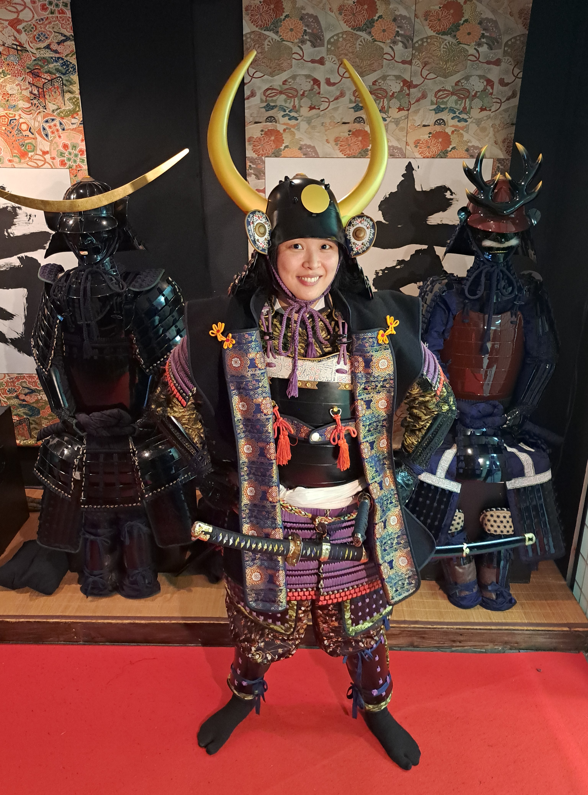

AI SUGITA
About Me

I am an aspiring software developer based in Dublin, Ireland, originally from Japan,
currently seeking an entry-level position or apprenticeship to kickstart my career in tech.
My passion for software development began with a simple question while playing video games: How does this actually work under the hood?
I was fascinated by how complex rules, physics, and logic could run seamlessly in real-time to create entire interactive worlds.
Driven to understand the systems behind the screen, I taught myself to code and earned certifications in ITS Java, ITS HTML & CSS, and ICDL Coding Principles.
Today, I build web projects and practical software using HTML, CSS, Python, and Java—applying that same curiosity about game architecture to clean front-end design, backend logic, and creative problem-solving.
Beyond Coding
Outside of tech,
I love building things by hand through knitting and crocheting—a passion for creating from scratch that mirrors my approach to software development!
I am also an avid reader and make it a habit to read for at least an hour every night before bed.